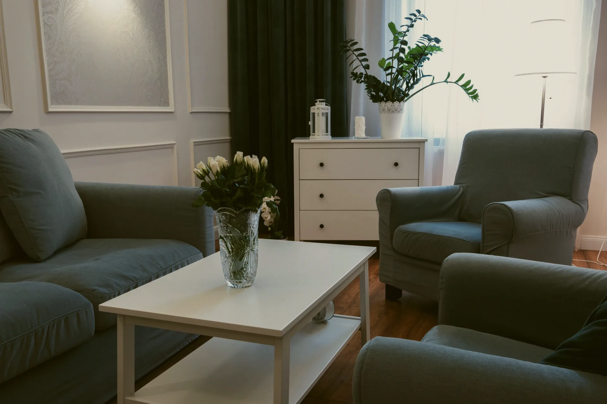

Egyeztetés
Egy beszélgetés a HR-rel vagy a vezetővel: mi a helyzet, mi a cél, mekkora létszámról és keretről van szó. Telefonon vagy személyesen a Központban.
Cégeknek · öt együttműködési forma
Klinikusok, nem trénerek. A céges programokat a Központ szakpszichológusai és coachai viszik, egy szakmai vezetés alatt.
Mindegyik a Központ klinikusaival. A keret és a díj egyedi ajánlat szerint alakul, a részletekről az ügyfélszolgálat tájékoztat.
EAP, munkavállalói támogató program
A cég keretet biztosít, a munkatársak egyéni alkalmakra jönnek a Központba vagy online. A munkáltató a beszélgetések tartalmáról nem kap tájékoztatást.
Workshop
Fél vagy egész napos, tematikus: stressz és kiégés, konfliktus a csapatban, változás a szervezetben, vezetői kommunikáció. Pszichológus vezeti, nem tréner.
Assessment
Pszichológiai felmérés kiválasztáshoz, kinevezés előtt vagy fejlesztési céllal. Strukturált interjú és tesztek, írásos visszajelzés a résztvevőnek és a megbízónak, előre egyeztetett keretek szerint.
Team building
Nem játék és nem vetélkedő. Pszichológus vezette, strukturált csapatmunka arról, hogyan dolgozik együtt a csapat, hol akad el, és mit kezd a feszültséggel.
Vezetői coaching
Egyéni, célhoz kötött folyamat vezetőknek: döntés, delegálás, szerepváltás, terhelés. A Központ coachai és klinikusai közül a vezető választ.
A cégnél is ötven perc
A céges keretből érkező munkatárs ugyanabba a rendelőbe jön, ugyanahhoz a szakemberhez, mint bármelyik magánkliens. Nincs külön céges ügyfélpálya, és nincs enyhébb mérce.
A titoktartás a munkáltató felé is érvényes: a cég a keretet ismeri, a tartalmat nem. Az elszámolás módját az ajánlat rögzíti.
Hogyan zajlik egy első alkalomHogyan indul
Nincs nyilvános céges árlista, mert nincs két azonos keret. Az ajánlat mindig az adott cégre készül.
Egy beszélgetés a HR-rel vagy a vezetővel: mi a helyzet, mi a cél, mekkora létszámról és keretről van szó. Telefonon vagy személyesen a Központban.
Formák, óraszám, ütemezés, díj és a titoktartás kerete egy dokumentumban. A díj egyedi ajánlat, a részletekről az ügyfélszolgálat tájékoztat.
Belső tájékoztató a munkatársaknak, időpontok az ügyfélszolgálaton keresztül, kapcsolattartó a Központ oldalán. A futamidő és a visszajelzés módja az ajánlatban áll.
Díjazás
Céges díj: egyedi ajánlat, a formától, az óraszámtól és a futamidőtől függően
Tájékoztatásul az egyéni díjsávok: pszichológus 15-20 ezer, klinikai szakpszichológus 18-25 ezer, szakpszichoterapeuta 25-30 ezer, coaching 15-18 ezer forint egy 50 perces alkalomért. A céges keret ezekre épül, a pontos összeget az ajánlat rögzíti.

Ajánlatkérés
Írjon az ügyfélszolgálatnak, vagy hívja hétköznap 9 és 15 óra között: +36 30 961 1364. Egy beszélgetés után írásos, egyedi ajánlatot kap. Aki már tudja, kihez jönne, egyéni időpontot is kérhet.